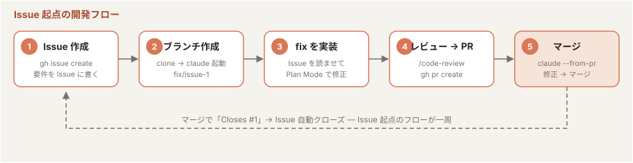
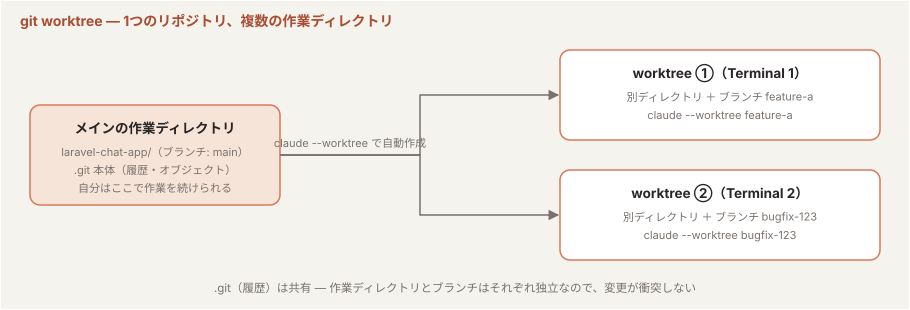
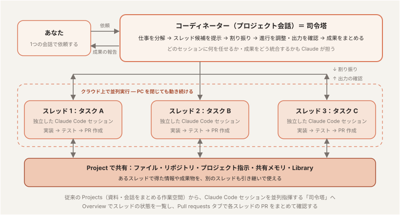

Section 3：Claude Code を使ったチーム開発
「個人の使いこなしをチームの標準にし、チームのフローとして回す」
1到達目標・時間配分
到達目標
- CLAUDE.md / Skills / settings をチームで共有・運用できる
- プロジェクトの知識を「ルール・設計・手順」に仕分けて、CLAUDE.md・docs・Skills に配置できる
- Issue 起点のチーム開発フロー（Issue → ブランチ → fix → レビュー → PR → マージ）を Claude Code で回せる
時間配分（120分）
| # | 内容 | 時間 |
|---|---|---|
| 1 | オープニング（到達目標・時間配分の説明） | 5分 |
| 2 | チームでの CLAUDE.md 運用 | 12分 |
| 3 | Skills の共有 | 15分 |
| 4 | プロジェクトナレッジの整理 | 15分 |
| 5 | 実践：チーム開発フロー | 35分 |
| 6 | 実践：チーム開発フローの自動化 | 15分 |
| 7 | 後片付け：作成したリポジトリの削除 | 2分 |
| 8 | まとめ・コース総括 | 8分 |
| 9 | Q&A（質疑応答など） | 13分 |
2チームでの CLAUDE.md 運用（12分）
2-1. 共有の基本方針（6分）
<repo>/CLAUDE.mdを リポジトリにコミット してチーム全員で共有する- 個人の好み（エディタ設定・出力スタイル等）は
CLAUDE.local.mdか~/.claude/CLAUDE.mdへ - CLAUDE.md の変更も PR でレビュー する — 「Claude への指示」はチームの規約そのもの
2-2. 運用のアンチパターン（6分）
| アンチパターン | 対策 |
|---|---|
| 何でも書いて肥大化 | 定期的に棚卸し。コードから分かることは消す |
| 個人ルールの混入 | CLAUDE.local.md に分離 |
| 書いたきり更新しない | 規約変更・構成変更と同じ PR で更新 |
3Skills の共有（15分）
Section 2 で作った自作スキルは ~/.claude/skills/ にあり、自分の PC でしか使えない。チームで共有する方法は2つある。この章では ① を 3-1〜3-2（演習1）で、② を 3-3（演習2）で扱う。
| 方法 | やること | 届く範囲 | 向いている場面 |
|---|---|---|---|
| ① リポジトリにコミット | スキルをリポジトリの .claude/skills/ に置いて commit / push する | そのリポジトリを clone した人（git pull で更新も届く） | そのプロジェクト専用の手順（テストの書き方・リリース手順など） |
| ② プラグインとして配布 | スキルをプラグインにまとめ、マーケットプレイス（GitHub リポジトリ）に登録する。利用者は /plugin marketplace add → /plugin install | マーケットプレイスを登録した人なら、どのリポジトリで作業していても 使える | 複数プロジェクトや組織全体で使い回す共通スキル。Hooks・SubAgent・MCP 接続もまとめて配れる |
- 迷ったら まず ①。共有したいスキルが増え、複数のリポジトリで同じものを使うようになったら ② に移す
3-1. ① リポジトリにコミットで共有できるもの（6分）
| 対象 | 配置場所 | 共有方法 |
|---|---|---|
| Skills | .claude/skills/ | リポジトリにコミット |
| Hooks・パーミッション設定 | .claude/settings.json | リポジトリにコミット |
| SubAgent（レビュー観点の統一） | .claude/agents/ | リポジトリにコミット |
| 個人用設定 | .claude/settings.local.json | git 管理外 |
3-2. チームでの活用例（4分）
- テスト生成の手順を
/test-genスキルとして共有 → テスト観点の平準化 PostToolUseでリンタを強制 → 「Claude が書いてもチーム標準のコード」を担保- Section 2 で作った
shell-code-reviewerサブエージェントをコミット → レビュー観点の統一（誰が回しても同じ基準でレビューされる） - 新メンバーのオンボーディング：
claudeを起動して「このプロジェクトの開発の流れを教えて」
演習1
Section 2 で作った test-gen スキルをコミットし、隣の受講者のリポジトリで動かしてもらう
Section 2 で作った test-gen は個人用の ~/.claude/skills/ にあるので、自分の PC でしか使えない。これをリポジトリの .claude/skills/ に移してコミットし、隣の受講者に clone して動かしてもらう。push 先は Section 2 の 8-7 で gh pr create が作った 自分の fork（<自分のアカウント>/agmsg）を使う。
共有する側（自分）
- Section 2 で使った
agmsgのディレクトリでclaudeを起動する - 個人用スキルを、名前を変えてリポジトリにコピーする（隣の受講者も自分の
test-genを持っているため、名前を分ける）:あなたの指示~/.claude/skills/test-gen を、このリポジトリの .claude/skills/test-gen-<自分の名前> としてコピーして。SKILL.md の name も合わせて直して
/skillsを実行し、test-gen-<自分の名前>が プロジェクト（.claude/skills） のスキルとして一覧に出ることを確認する- コミットして自分の fork に push する:
あなたの指示
.claude/skills/test-gen-<自分の名前> をコミットして、自分の fork（<自分のアカウント>/agmsg）の main に push して
- fork がまだ無い場合は「kimotuki/agmsg を自分のアカウントに fork して remote に追加して」と頼む（
gh repo fork --remote相当）
- fork がまだ無い場合は「kimotuki/agmsg を自分のアカウントに fork して remote に追加して」と頼む（
- 隣の受講者に自分の GitHub アカウント名を伝える
動かす側（隣の受講者）
- 別のディレクトリに相手の fork を clone して
claudeを起動する:$ git clone https://github.com/<相手のアカウント>/agmsg agmsg-<相手の名前> $ cd agmsg-<相手の名前> $ claude
/skillsでtest-gen-<相手の名前>が一覧に出ることを確認する（自分では作っていないスキルが、clone しただけで使える）- スキルを実行してテストを生成させる:
あなたの指示
/test-gen-<相手の名前> scripts/send.sh
tests/にテストが追加され、bats tests/が通ることを確認する
- 確認ポイント：
.claude/skills/をコミットするだけで、clone した人全員が同じ手順のスキルを使える（3-1 の表のとおり）。個人用~/.claude/skills/のスキルはどれだけ便利でも本人にしか届かない
test-gen が残っていると、プロジェクト側の同名スキルは呼ばれない。この演習で名前を分けたのはそのため。チームで共有するスキルは、各自の個人用スキルと名前がぶつからないようにしておく。
3-3. プラグイン（5分）
Skills / Hooks / 設定を まとめて配布できる単位 が プラグイン。.claude/ への手動コミットより、バージョン管理・更新が楽で、マーケットプレイス経由で導入できる。

- Skill ＝ 手順書の最小単位（
SKILL.md）。プラグインに同梱して配布できる - プラグイン ＝ Skills・SubAgent・Hooks・MCP 接続を ひとまとめにした配布の入れ物
- マーケットプレイス ＝ プラグインの 配布カタログ（実体は GitHub リポジトリ。例:
claude-plugins-official） - 共有の流れ：作成者がプラグインをマーケットプレイスに登録 → 利用者は
/plugin marketplace addで登録 →/plugin installで導入
セキュリティレビューを自動化する security-guidance プラグイン
公式マーケットプレイス（claude-plugins-official）の security-guidance プラグインは、Claude が行う各変更を脆弱性観点でレビューし、見つけた問題を同じセッション内で修正させる。チーム全員が入れておけば、誰が書いても一定のセキュリティ水準が担保される。
基本インストール
Claude Code のセッション内で以下を実行する:
/plugin install security-guidance@claude-plugins-official
マーケットプレイスが見つからない場合は、先に登録する:
/plugin marketplace add anthropics/claude-plugins-official
インストール後、現在のセッションに即時適用する:
/reload-plugins
- user スコープ を選ぶと、同一マシンのすべてのセッションで自動的に読み込まれる
/pluginを実行すると、Discover / Installed / Marketplaces / Errors のタブでプラグインを管理できる
チーム・プロジェクト全体への適用
リポジトリに .claude/settings.json を追加すると、そのリポジトリをクローンした全員に自動適用される:
{
"enabledPlugins": {
"security-guidance@claude-plugins-official": true
}
}
- Claude Code on the Web（クラウドセッション）では user スコープのプラグインが引き継がれない ため、プロジェクト設定（上記）への記述が必要
- 組織全体に展開する場合は、管理者が マネージド設定 で
enabledPluginsを設定する
演習2
自分のマーケットプレイスを GitHub に作り、test-gen スキルをプラグインとして公開して、隣の受講者に /plugin でインストールしてもらう。
演習1 は「リポジトリを clone した人」にしか届かない。マーケットプレイスにすると、どのリポジトリで作業していても /plugin install 一発で導入でき、更新も /plugin update で配れる。マーケットプレイスの実体はただの GitHub リポジトリで、最小構成は次のとおり:
cc-plugins-<自分の名前>/
├── .claude-plugin/
│ └── marketplace.json ← カタログ（必須）
└── plugins/
└── dev-tools/ ← プラグイン（1つのディレクトリ）
└── skills/
└── test-gen/
└── SKILL.md ← Section 2 で作ったスキルをそのまま置く
{
"name": "<自分の名前>-plugins",
"owner": { "name": "<自分の名前>" },
"plugins": [
{
"name": "dev-tools",
"source": "./plugins/dev-tools",
"description": "チーム用スキル（test-gen）"
}
]
}
sourceはマーケットプレイスのルート（.claude-plugin/がある場所）からの相対パス。プラグイン側の.claude-plugin/plugin.jsonは省略可（無ければ標準の配置skills/等がそのまま読まれる）- プラグインに入れたスキルは
/<プラグイン名>:<スキル名>（ここでは/dev-tools:test-gen）で呼ぶ。名前空間が分かれるので、演習1 のように個人用のtest-genとぶつからない
共有する側（自分）
- 空のディレクトリを作って
claudeを起動する:$ mkdir cc-plugins-<自分の名前> && cd cc-plugins-<自分の名前> $ git init $ claude
- 上の構成を Claude に作らせる:
あなたの指示
このディレクトリを Claude Code のプラグインマーケットプレイスにして。.claude-plugin/marketplace.json は name を「<自分の名前>-plugins」、owner を自分にして、plugins に name「dev-tools」、source「./plugins/dev-tools」を登録して。~/.claude/skills/test-gen を plugins/dev-tools/skills/test-gen にコピーして
- 構成を検証する（JSON の必須項目・名前の整合性をチェックしてくれる）:
!claude plugin validate .
- GitHub に public リポジトリとして push する:
あなたの指示
gh でこのディレクトリを自分のアカウントの新しい public リポジトリ cc-plugins-<自分の名前> として作成して push して
- 隣の受講者に自分の GitHub アカウント名を伝える
インストールする側（隣の受講者）
- 自分の作業中の Claude Code（どのリポジトリでもよい。例: Section 2 の
agmsg）で、相手のマーケットプレイスを登録してプラグインを入れる:/plugin marketplace add <相手のアカウント>/cc-plugins-<相手の名前> /plugin install dev-tools@<相手の名前>-plugins /reload-plugins
/pluginの Installed タブ、または/skillsにdev-tools:test-genが出ることを確認する- スキルを実行してテストを生成させる:
あなたの指示
/dev-tools:test-gen scripts/send.sh
- 更新の流れ：作成者がスキルを直して push → 利用者は
/plugin marketplace update <相手の名前>-plugins→/plugin update dev-tools@<相手の名前>-plugins。clone し直す必要がない - 演習1 との違い：演習1（
.claude/skills/をコミット）はそのリポジトリ専用、演習2（マーケットプレイス）は 組織内のどのリポジトリでも使える共通スキル の配り方。リポジトリは private でもよい（clone できる人だけが使える） - チーム全員に強制したい場合は、各リポジトリの
.claude/settings.jsonのenabledPluginsに"dev-tools@<名前>-plugins": trueを書く（上のsecurity-guidanceと同じ）
4プロジェクトナレッジの整理（15分）
プロジェクトに関するナレッジ（規約・設計の背景・作業手順・仕様書等）を全て CLAUDE.md に詰め込むと、コンテキストを圧迫して逆に忘れやすくなる。ナレッジの種類ごとにファイルを分け、常時読み込むものと必要なときだけ読むものを切り分けるのが重要。
4-1. 知識を仕分ける（5分）
| 知識の種類 | 例 | 置き場所 | 読み込まれるタイミング |
|---|---|---|---|
| 常に守らせるルール | テストコマンド、コーディング規約、ブランチ運用 | CLAUDE.md | セッション開始時に常時 |
| 特定のファイルを触るときだけのルール | scripts/ 配下のシェル規約、テストの書き方 | .claude/rules/*.md（frontmatter の paths: で対象を指定） | 該当ファイルを扱うときに遅延読み込み |
| 設計・背景の知識（長文） | アーキテクチャ、設計判断の記録、仕様書、用語集 | docs/ に階層化して置き、docs/INDEX.md で一覧化。CLAUDE.md からは インデックスだけを指す（本文の @import は常時読み込みになるので、短い規約向け） | 必要なときにインデックス経由で読む |
| 定型作業の手順 | リリース手順、テスト生成の手順 | .claude/skills/<name>/SKILL.md | 呼び出し時・Claude が必要と判断した時 |
| コード以外の資料 | 仕様書 PDF、議事録、顧客要件 | claude.ai の Projects のナレッジ（付録C） | チャットで質問したとき |
- 判断基準は 「これを消したら Claude が失敗するか？」。YES なら CLAUDE.md、NO なら docs/ やスキルへ。CLAUDE.md は 200行未満 が目安（長いほどコンテキストを消費し、指示が守られにくくなる）
- CLAUDE.md は managed 設定 →
~/.claude/CLAUDE.md→ プロジェクトのCLAUDE.md→CLAUDE.local.mdの順に 連結して 読み込まれる（上書きではない）。サブディレクトリの CLAUDE.md は、そのディレクトリのファイルを扱うときに読み込まれる @pathによる import は相対パス・絶対パス・@~/...が使え、import 先からさらに import できる（最大4段）。コードブロック内の@は無視される- 個人メモ（auto-memory）は マシン単位で共有されない。チームで共有したい知識は必ずリポジトリ内のファイルに置く
4-2. 開発プロジェクトのドキュメントを Claude Code が参照できるようにする（5分）
Claude Code はテキストや Markdown だけでなく、PDF や画像もそのまま読める。大事なのは形式をそろえることより、「どこに何があるか」を Claude が見つけられる状態 にすること。手順は「階層化して整理 → インデックスを作る → CLAUDE.md からインデックスを指す」。
- 棚卸しして階層化する：既存ドキュメントを目的別に
docs/配下へ整理する（例：docs/architecture/・docs/specs/・docs/adr/・docs/ops/）。形式はそのままでよく、Markdown 化するのは頻繁に参照するものや差分管理したいものだけ（変換は Claude に頼める）。Confluence / Notion / Google Drive 上の資料は持ち込まず、コネクタ・MCP（Section 2 の4〜5章）で参照し、置き場所だけをインデックスに書く - インデックスを作る：
docs/INDEX.mdに「パス／1行の説明／いつ読むか」を並べる。Claude に生成させるあなたの指示docs/ 配下のドキュメントを読んで、パス・1行の説明・どんなときに読むべきかをまとめた docs/INDEX.md を作って。社外の資料は「Confluence の Ops スペース」のように置き場所だけ書いて
- CLAUDE.md からインデックスだけを指す：資料の本文を
@importで常時読み込ませない。特定ファイルを触るときのルールは.claude/rules/に置く - 確かめる：設計に関する質問をして、Claude がインデックス経由で該当ドキュメントを開くことを確認する。
/memoryで読み込まれているファイルを、/contextで常時の消費が増えていないことを確認する（付録A）
# docs/INDEX.md（例）— パス / 1行の説明 / いつ読むか
- docs/architecture/overview.md — 全体構成と主要コンポーネント。設計変更や新機能の前に読む
- docs/adr/ — 設計判断の記録（1判断1ファイル）。「なぜこうなっているか」を知りたいときに読む
- docs/specs/cli.md — CLI コマンドと引数の仕様。コマンドを追加・変更するときに読む
- docs/specs/requirements-v3.pdf — 要件の原本（PDF のまま）。仕様の解釈で迷ったときに読む
- 運用手順 — Confluence の Ops スペース（コネクタで参照）。リリース・障害対応のときに読む
# CLAUDE.md（抜粋）— ルールは短く、資料はインデックス経由で
- テスト: `bats tests/`、静的解析: `shellcheck scripts/*.sh`
- 設計・仕様の資料は docs/INDEX.md を見て、必要なものだけ読むこと
# .claude/rules/shell.md — scripts/ 配下を編集するときだけ読み込まれる
---
paths:
- "scripts/**/*.sh"
---
- 先頭で `set -euo pipefail` を宣言する
- 変数展開は必ずダブルクォートで囲む
4-3. 演習：agmsg のドキュメントを Claude Code から参照できるようにする（5分）
Section 2 で使った agmsg のディレクトリで claude を起動する。agmsg には docs/spec/・docs/adr/・docs/design.md など既存のドキュメントがそろっているので、これを題材にインデックスを作る。
docs/ 配下（spec/ と adr/ を含む）と ARCHITECTURE.md を読んで、パス・1行の説明・どんなときに読むべきかをまとめた docs/INDEX.md を作って
CLAUDE.md に、開発時に常に守るべき規約を5行以内で追記して。設計・仕様の資料については本文を書かず、「docs/INDEX.md を見て必要なものだけ読む」とだけ書いて
scripts/ 配下の .sh を編集するときだけ適用されるルールを .claude/rules/shell.md に作って。set -euo pipefail と変数のダブルクォートを必須にして
!cat docs/INDEX.mdで内容を確認する。説明が1行に収まっているか、「いつ読むか」が書かれているかを見る- 「ストレージをドライバとして差し替えられるようにしたのはなぜ？」と質問し、
docs/adr/の設計判断の記録を根拠に答えることを確認する（インデックス経由で該当ファイルを開くはず） - 「scripts/send.sh のエラーメッセージを分かりやすくして」と頼み、
.claude/rules/shell.mdの規約が守られることを確認する /contextで常時の消費が増えていないことを確認し、できあがった INDEX.md・CLAUDE.md・rules をgit diffで見る。5章で自分のリポジトリを作成したら同じ変更をコミットしておくと、以降の Issue 対応で Claude が規約とドキュメントを踏まえて動くようになる
5実践：チーム開発フロー（35分）
題材：Section 1・Section 2 で使った agmsg（CLI AI エージェント間のメッセージングツール。Bash + SQLite 製）。clone して自分のリポジトリとして作成し、Issue 起点の開発フロー を一周する。

Issue Driven Development（IDD）とは
- Issue Driven Development ＝ すべての作業を Issue から始める 開発スタイル。「何を・なぜ・どこまでやるか」を Issue に書いてから、ブランチを切って実装し、PR で Issue に紐づけて閉じる
- 1 Issue ＝ 1 ブランチ ＝ 1 PR が基本。Issue 番号をブランチ名（
fix/123-readme-quickstart）や PR 本文（Closes #123）に入れておくと、Issue → ブランチ → PR → コミットの経緯が自動でつながる - Claude Code との相性がよい：Issue 本文がそのまま Claude への指示（要件）になる。「#123 を対応して」と頼めば、Claude が
gh issue viewで Issue を読み、要件と受け入れ条件に沿って実装できる
Issue を作ってから開発するメリット
| メリット | 内容 |
|---|---|
| 要件が言語化される | 着手前に「何を・なぜ・どこまで」を書くことで、チームで認識合わせができる。Claude への指示も Issue 番号を指すだけで済む |
| 作業単位が小さくなる | 1 Issue ＝ 1 PR で区切るので、レビューしやすく、戻しやすい。Claude Code に任せる粒度としてもちょうどよい |
| 経緯が残る | 「なぜこう変えたか」が Issue → PR → コミットにつながって残る。後から Claude に「#123 の経緯を説明して」と聞ける |
| 並列に進めやすい | Issue ごとに担当（人でも Claude でも）を割り当てられる。worktree（付録B）や Projects（付録C）で作業を分ける単位になる |
| 自動化の起点になる | Issue や PR のコメントで @claude にメンションすると GitHub Actions 上の Claude Code が動く（6章）。Issue 番号を引数にしたスキルも作れる |
5-1. 題材を clone して自分のリポジトリを作成（5分）
題材の agmsg を clone し、gh コマンドで 自分のアカウントのリポジトリ として作成する。以降の Issue・PR はすべて自分のリポジトリ上で回す。
$ git clone https://github.com/kimotuki/agmsg $ cd agmsg $ claude
gh でこのコードを自分のアカウントの新しい public リポジトリとして作成して push して
gh repo create agmsg --public --source=. --push相当が実行され、origin が自分のリポジトリに切り替わる
5-2. gh で Issue を作成（5分）
「README に日本語のクイックスタートを追記してほしい」という Issue を gh で作成して
gh issue createが実行される — タイトル・本文も Claude が整えてくれる- Issue 本文がそのまま Claude への要件になる — 再現手順や期待動作を丁寧に書くほど後工程の精度が上がる
5-3. ブランチを切って fix を実装（10分）
Issue #1 に対応するブランチを切って
gh issue view 1で内容を確認し、fix/issue-1のようなブランチが作られる
Issue #1 を読んで、Plan Mode で対応方針を立ててから修正して
- Claude が Issue 本文を読み、計画を提示 → レビューして承認 → 実装 → テスト
- 人間は 計画と差分のレビュー に集中する
5-4. スキルでレビューして PR を作成（5分）
push する前に、組み込みスキルで自己レビューする。
/code-review
指摘があれば修正してから PR を作成：
Issue #1 を closes する PR を作成して
- PR 本文に
Closes #1が入り、マージすると Issue が自動クローズ される
git diff で必ず人が確認する。
5-5. 他の人の PR をレビューしてマージ（10分）
受講者同士でペアを組み、互いの PR をレビューする。まず相手から次の2つの情報を教えてもらう:
- リポジトリの URL —
https://github.com/<相手のアカウント>/agmsg - レビューしてほしい PR の番号 — 相手が 5-4 で作成した PR の番号
https://github.com/<相手のアカウント>/agmsg/pull/<N>）を1つ教えてもらえば、リポジトリの URL と PR 番号の両方が分かる。
教えてもらったリポジトリを clone し、claude --from-pr <N> で起動すると、PR の文脈（差分・説明文・レビューコメント）を読み込んだ状態 でセッションを開始できる。
$ git clone https://github.com/<相手のアカウント>/agmsg $ cd agmsg $ claude --from-pr <N> # N は教えてもらった PR 番号
/review
指摘があれば、レビュー結果を相手の PR にコメントとして残す:
レビュー結果を PR にコメントして
gh pr comment <N>相当が実行され、相手の PR にコメントが付く（public リポジトリなら、コラボレーターでなくてもコメントは書き込める）- PR の作者は 自分のリポジトリ で
claude --from-pr <自分のPR番号>を起動し、「レビューコメントに対応して」→ 修正 → push
対応が終わって問題がなくなったら、PR の作者（リポジトリのオーナー）が 自分の PR をマージする:
この PR をマージして
gh pr mergeが実行され、Closes #1により Issue も自動クローズ — Issue 起点のフローが一周 する
6実践：チーム開発フローの自動化（15分）
5章で回した「Issue 起点の開発フロー」は毎回同じ手順の繰り返し — つまり スキル化の好対象。フロー全体を1つのスキルに落とし込み、1コマンドで回せるようにする。
issue-review-flow というスキルを作って。Issue 番号を引数で受け取り、
1. gh issue view で Issue の内容を確認
2. fix/issue-<番号> ブランチを作成
3. 対応方針を立てて、確認してから修正を実装
4. /code-review でレビューし、妥当な指摘を修正
5. コミットして PR を作成（本文に Closes #<番号> を入れる）
という手順にして。
作成できたら、実行する前に生成されたスキルの内容を確認する。指示した5つの手順がそのまま入っているか、意図しない操作が紛れ込んでいないかをレビューしておく:
$ cat .claude/skills/issue-review-flow/SKILL.md
内容に問題がなければ、新しい Issue を1つ作って実行してみる:
/issue-review-flow 2
- 定型フローをスキル化すれば、チームの誰でも同じ品質のフローを1コマンドで再現 できる
.claude/skills/issue-review-flow/をコミットすれば、3章で学んだとおりチーム全員に共有される
/install-github-app を実行すると、GitHub App のインストールとワークフローの追加まで対話的にセットアップできる。以後は PR や Issue のコメントで @claude にメンションすると、GitHub Actions 上の Claude Code がレビューや修正を行い、結果をコメント・コミットで返す。認証はサブスクリプションなら claude setup-token で作る OAuth トークン（Pro / Max / Team / Enterprise）、API 利用なら API キーをリポジトリの Secret に登録する。Issue / PR の本文は 信頼できない入力 なので、Actions 側の権限は最小にし、マージは人がレビューしてから行う。
claude -p "<指示>" で対話なしに実行でき、--allowedTools で使えるツールを、--output-format json で出力形式を指定できる。CI では --bare を付けると CLAUDE.md や hooks の自動読み込みを省いて速く・再現性よく動く。例：マージ済み PR からリリースノートを生成する
$ claude -p "前回のタグ以降にマージされた PR を gh で集めて、CHANGELOG.md にリリースノートとして追記して" \
--allowedTools "Read,Edit,Bash(gh pr list:*),Bash(git tag:*),Bash(git log:*)"
作ったスキルは、3章「Skills の共有」の内容を参考にして、チームや組織で共有していきましょう！
7後片付け：作成したリポジトリの削除（2分）
5章で自分のアカウントに作成した agmsg はハンズオン用の練習リポジトリ。演習が終わったら、以下のコマンドを手動で実行して削除しておく。gh repo delete には追加の権限（delete_repo スコープ）が必要なので、先に gh auth refresh で付与してから実行する:
$ gh auth refresh -h github.com -s delete_repo $ gh repo delete <自分のアカウント>/agmsg --yes
<自分のアカウント>/agmsg であること（clone 元の kimotuki/agmsg や自分の別リポジトリを指定していないこと）を必ず確認してから実行する。
- ローカルの clone が不要になったら、あわせて
cd .. && rm -rf agmsgで削除しておく - 5-5 で clone した相手のリポジトリのローカルコピーも同様に削除してよい（リポジトリ本体の削除は作成した本人が行う）
✓まとめ・コース総括（8分）
Section 3 のまとめ
- CLAUDE.md・Skills・settings は リポジトリにコミットしてチームの資産 にする
- プロジェクトの知識は CLAUDE.md・rules・docs/INDEX.md に仕分けて置き、必要なものだけ読ませる
- 人間の仕事は 計画のレビューと差分のレビュー に寄っていく
コース総括
| Section | 身につけたこと |
|---|---|
| Section 1 | エージェントの仕組み・基本コマンド・ソースコード解析 |
| Section 2 | CLAUDE.md / Skills / Hooks・安全なコード変更の進め方 |
| Section 3 | チームでの共有・ナレッジの整理・PR ベースの開発フロー |
9Q&A（質疑応答など）（13分）
進行の遅れの吸収と質疑応答にあてる。時間が余ったら、付録B の git worktree で並行開発（発展課題）を扱う。
付付録A：コンテキスト管理 — /context・/compact・/clear と SubAgent の使い分け
A-1. なぜ管理が必要か
- コンテキストウィンドウは 有限（トークン上限がある）
- 埋まると自動コンパクション（要約圧縮）が走り、細部の情報が失われる
- 長いセッションで「さっき言ったことを忘れる」のは大半これが原因
主要モデルのコンテキストウィンドウ
| モデル | コンテキストウィンドウ | 最大出力 |
|---|---|---|
| Claude Fable 5 | 100万トークン | 128K |
| Claude Opus 4.8 | 100万トークン | 128K |
| Claude Sonnet 5 | 100万トークン | 128K |
| Claude Haiku 4.5 | 20万トークン | 64K |
- コンテキストウィンドウ ＝ モデルが一度に扱える情報量の上限。会話履歴だけでなく、CLAUDE.md・読み込んだスキル・ツールの実行結果もすべてここを消費する
- 上限はモデルごとに異なり、大きいモデルでも「無限」ではない
A-2. 3つのコマンド
| コマンド | 動作 | 使いどころ |
|---|---|---|
/context | 現在のコンテキスト使用量を可視化 | 長い作業の途中で残量チェック |
/compact | 会話を要約して圧縮（指示も添えられる） | 作業は続けたいが残量が心配なとき |
/clear | コンテキストを完全リセット | 別タスクに切り替えるとき |
/compact 実装方針とテスト結果は残して、探索の過程は要約して
A-3. 運用のコツ
- 1タスク1セッション が基本 — タスクが変わったら
/clear - 大事な決定事項は
#で CLAUDE.md に書き出してから/clearする（外部メモリ化） - コンパクションに頼るより、自分で要点を保存して新しいセッションを始める ほうが品質が安定する
A-4. SubAgent でコンテキストを分離する
/compact や /clear は「溜まってから減らす」対処。最初からメイン会話に入れない のが Section 2 の6章で扱った SubAgent。サブエージェントは 別のコンテキストウィンドウ で動き、何十個ファイルを読んでも、テスト出力が何千行あっても、メイン会話に戻るのは 結果の要約だけ。
| 向いている作業 | 例 |
|---|---|
| 広く読む調査 | 「scripts/ 配下で SQLite を直接呼んでいる箇所を全部洗い出して」 |
| 長い出力の分析 | 「bats tests/ を実行して、失敗したテストの原因だけ要約して」 |
| 観点を絞ったレビュー | 6章で作った shell-code-reviewer にレビューを任せる |
| メイン会話と無関係な脇道 | 「この依存ライブラリの最新版の変更点を調べて」 |
- 使い方は自然言語でよい：「サブエージェントで調べて」「別コンテキストでレビューして」。調査の規模が大きいと Claude が自分でサブエージェントを使うこともある
- サブエージェントは メイン会話の内容を知らない。目的・対象ファイル・返してほしい形（一覧だけ／要約だけ）を依頼文に含める
- 戻ってくるのは要約なので細部は落ちる。あとで参照したい調査結果は「
docs/notes/にファイルとして保存して」と頼み、ファイルに残す - 節約されるのは メイン会話のコンテキスト。サブエージェント側でもトークンは消費するので、総量が減るわけではない
- さらに大きく分けたいときは Section 2 付録B の Agent Teams（独立コンテキストのチームメイトを並列に動かす）
サブエージェントで scripts/ 配下を調査して、SQLite を直接呼んでいるファイルと行番号の一覧だけ返して。調査の途中経過はメイン会話に出さないで
演習
/context で現在の使用量を確認 → /compact を指示付きで実行 → 使用量の変化を見る
同じ調査（scripts/ 配下の SQLite 呼び出しの洗い出し）を、① メイン会話で直接頼んだ場合と ② サブエージェントに任せた場合で行い、/context の増え方を比べる
付付録B：git worktree で並行開発
時間が余ったとき・早く終わった人向けの発展課題。
git worktree は 1つのリポジトリから複数の作業ディレクトリを切り出す Git の機能。ブランチごとに独立したディレクトリで作業できるので、「長めのタスクを別の Claude Code セッションに任せつつ、自分はメインの作業を続ける」という並行開発ができる。

B-1. 一般的な使い方
--worktree の一般的な使い方としては、複数のターミナルでそれぞれ別の worktree セッションを動かすパターンがある。
# Terminal 1: 機能 A の開発 $ claude --worktree feature-a # Terminal 2: 同時にバグ修正 $ claude --worktree bugfix-123
それぞれのセッションは 別ブランチ・別ディレクトリ で動くので、変更が衝突しない。
手動で worktree を作ってから Claude Code を起動する方法もある。新しいブランチを作る場合は -b を付け、既存のブランチを使う場合はブランチ名をそのまま指定する:
# 新しいブランチ feature-a を作って worktree を作成 $ git worktree add ../project-feature-a -b feature-a # 既存のブランチ bugfix-123 から worktree を作成 $ git worktree add ../project-bugfix bugfix-123 # 作成した worktree に移動して Claude Code を起動 $ cd ../project-feature-a && claude
--worktree オプションは、この手順を自動化してくれるもの。
B-2. 演習：長めのタスクを worktree に任せる
5章で作成した自分の agmsg を題材に、長めのタスクを別 worktree の Claude Code に任せてみる。新しいターミナルを開いて、worktree セッションを起動する:
$ cd agmsg $ claude --worktree feature-export
メッセージ履歴を Markdown ファイルに書き出すエクスポート機能（scripts/export.sh）を追加して。bats テストも書いて、bats tests/ が通ることを確認して
- タスクが走っている間も、元のターミナルのセッションはそのまま使える — 6章のスキル改良や別の Issue 対応を並行して進める
- worktree 側のタスクが終わったら、いつも通り「コミットして PR を作成して」まで任せられる
worktree の状態確認と、マージ後の片付け:
$ git worktree list # 作成された worktree の一覧 $ git worktree remove <パス> # 不要になった worktree を削除
付付録C：Claude Code の Projects — 複数タスクを並列に回す
C-1. Claude Code の Projects とは
Anthropic は 2026年9月17日（米国時間）、Claude の「Projects」を再設計し、新バージョンを Claude Code でベータ提供すると発表した。従来の Projects は、仕事ごとに関連するチャット・資料・指示をまとめ、複数の会話で共通の背景情報を使えるようにする「作業空間」だった。新しい Projects はそこから大きく踏み込み、1つの会話を起点に Claude 自身が仕事を分解し、複数の Claude Code セッションへ割り振って並列実行する「司令塔」 へと変わる。

1つの会話から仕事全体を動かす
- ユーザーが 1つの会話（コーディネーター）で依頼した内容をもとに、Claude が必要な作業を整理して複数の スレッド に振り分ける。各スレッドは独立した Claude Code セッションとしてクラウド上で動き、Claude はそれらを並列に進めながら進行を調整し、出力を確認し、最後に成果をまとめる。スレッドは PC を閉じても動き続ける
- これまでは、大きな開発作業を複数の Claude Code セッションに分ける場合、「どのセッションに何を任せるか」「各セッションの成果をどう統合するか」をユーザー側で管理する必要があった。新しい Projects では、その調整役も Claude が担う
- Claude は作業内容を確認したうえで、新たに開始できるスレッドを複数の候補として提示する。候補を個別に開始することも、複数のスレッドをまとめて立ち上げることもできる
- 例：「アプリの決済処理のレイテンシー低減」を Project の目標に設定し、複数のエンドポイントについて性能分析・最適化のテスト・PR 作成を並列で進める。API / Web / モバイルなど複数のリポジトリにまたがる変更では、リポジトリごとにスレッドを立ち上げてコード変更・テスト・PR 作成を進め、どの変更を先にマージすべきかまで Claude が整理する
- Overview ペインでスレッドの状態（Working / Waiting on you / Ready for review など）を一覧でき、Pull requests タブで各スレッドが作った PR をまとめて追える
複数スレッドで共有する「メモリ」と「Library」
- 各スレッドは Project の ファイル・リポジトリ・指示・メモリ を共有した状態で開始する
- あるスレッドで得られた情報は 共有メモリ に蓄積され、別のスレッドからも利用できる。例：「リリース日が金曜日に変更された」「ある機能を削除した理由」「課金サービスを変更する前に誰へ確認する必要があるか」
- ユーザーとの仕事の進め方も記憶する。進捗報告の頻度、新しいスレッドをどの程度積極的に開始するか、報告をどこまで詳しくするかなどを調整できる
- Library には、ユーザーが追加したファイルだけでなく Claude が作成した成果物も Project 内に蓄積され、後続の作業で引き継いで利用できる
- プロジェクト指示 は Project settings → Memory → Project Instructions（最大16,000文字）に書く。対象ブランチ・確認方法・承認が必要な操作など、4章で CLAUDE.md に書いたルールと同じ考え方
- すでに動かしているクラウドセッションから Continue as a project で始めたり、Move to project で既存プロジェクトに取り込んだりもできる